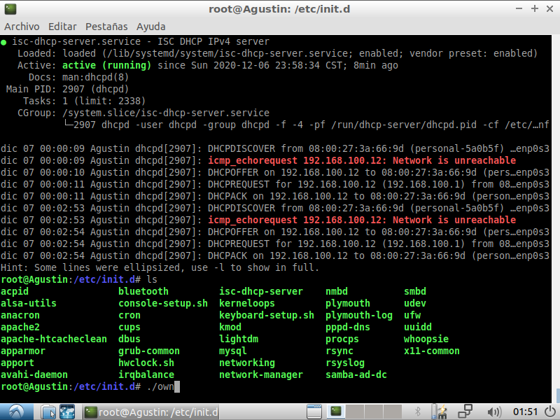
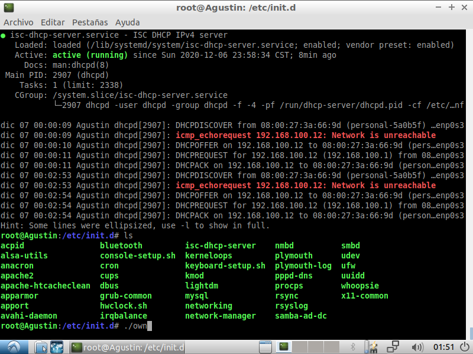
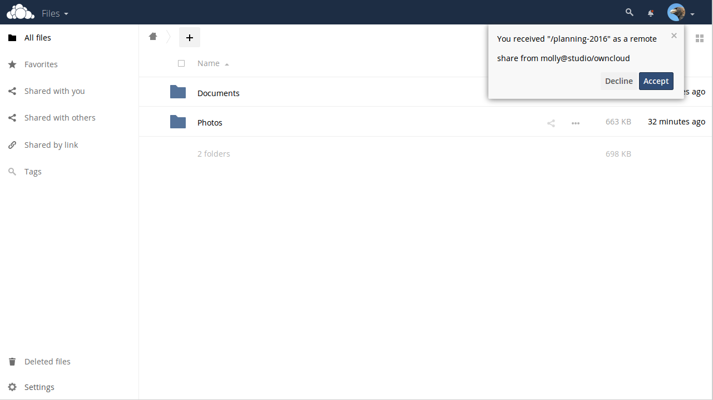
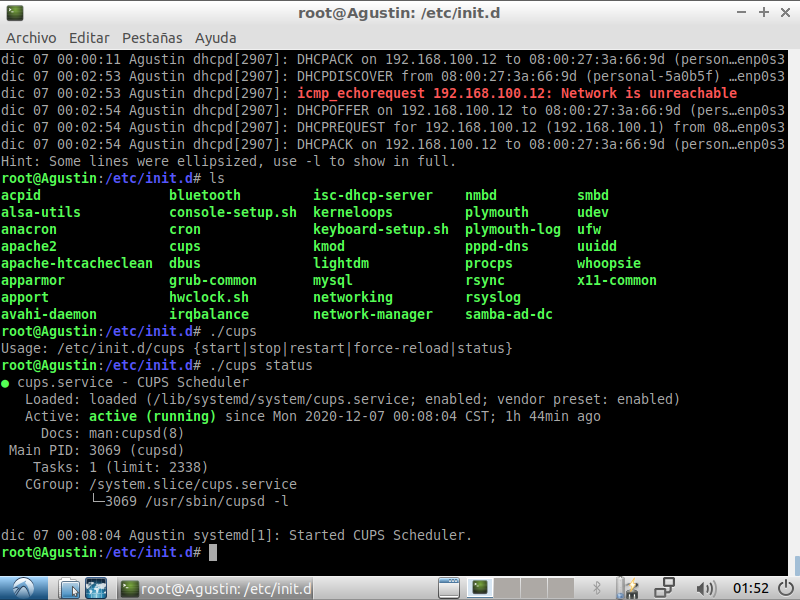

Introduccion
Vinos y licores Don Efren es una empresa dedicada a la elaboracion artesanal de vinos y licores. Su metodo de ventas es el linea, en redes sociales, correo electronico y repartos a domicilio en la ciudad de Xalapa y otras ciudades cercanas.
Esta empresa cuenta con unas oficina en la ciudad de Xalapa donde se encuentra la bodega de almacenamiento, el personal encargado de tomar los pedidos de las redes sociales y el departamento de publicidad. Estos dos ultimos cuentan con 3 computadoras. En la bodega hay una computadora donde se administra los productos que se compran para elaborar los vinos y licores, los productos listos para la venta y los vinos que estan reposando
Se creo un servidor que ayude a la administracion de la empresa haciendo una red entre todas las computadoras que hay en el sitio. Este servidor estara montado en Linux en el sistema operativo Ubunto 18.04
Servidor DHCP
Tres de las personas que laboran en la empresa realizan trabajo de oficina. Uno de ellos es el encargado de la publicidad en las redes sociales y los otros dos se encargan de tomar los pedidos que llegan por las redes sociales, por correo electronico o via telefonica.
Cada uno de los trabajadores tienen su computadora de trabajo, es por eso que dentro de las instalaciones se necesita un servidor dhcp para poder conectar todas las computadoras utilizadas.
.png) 

Servidor proxy
Para estas tres maquinas de le permite el acceso a internet mediante el servidor proxy, dando solo acceso a las paginas neceesarias para cumplir sus funciones:
El encargado de la publicidad tiene accesso solo a Instagram, Facebook y a pagina oficial de la empresa.
Las dos personas encargadas de tomar los pedidos tienen acceso de igual forma a Intragram, Facebook, web.whatsapp y Gmail
Servidor web
La empresa cuenta con una sitio web donde los clientes pueden entrer y ver la variedad de vinos y licores que esta a la venta, tabien pueden encontrar fuentes de contacto o realizar su pedido desde ahi. Esta pagina web esta alojada en el servidor de la empresa utilizando apache2.
.png)
Servidor DNS
Para asignarle un nombre a nuestro servidor web utilizamos un servidor DNS para que todos los usuarios de la pagina puedan acceder a ella por el nombre http://DonEfren.com/vinosylicores
Servidor nube
Cada dia, el personal encargado de realizar los pedidos, crea un archivo con la relacion de las ventas; el producto vendido, cantidad, precio, costo de envio y el rerpartidor encargado en caso de ser a domicilio. Al finalizar el dia este archivo es guardado en la nube de la empresa para ser revisado por el administrador
De igual forma los repartidores hacen una relacion de los los paquetes entregados, si hubo algun inconveniente en la entrega y el metodo de pago que se llevo acabo
Servidor de impresion
Para que el repartidor entregue los pedidos se le da una referencia donde especifica cual es el pedido, monto total a cobrar, la direccion a donde la lleva y numero de telefono que del cliente. Esta referencia debe ser firmada al entregar el producto.
La referencia es creada por el personal que toma la orden y manda a imprimir mediante un servidor de impresion cups
